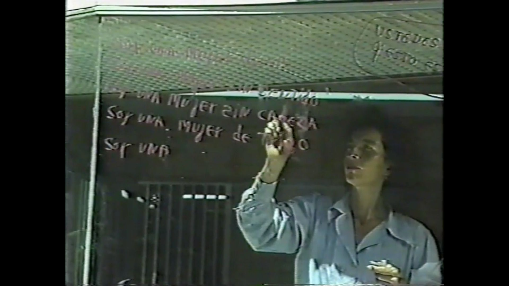
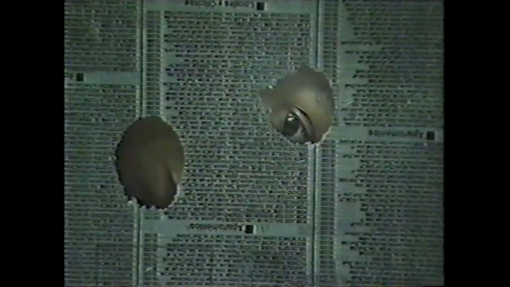
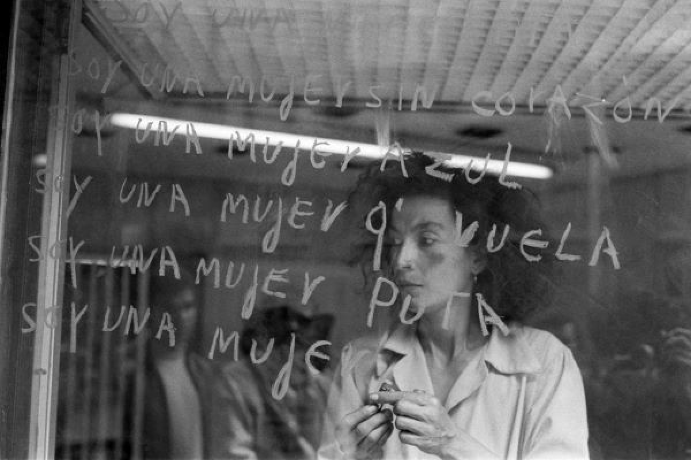
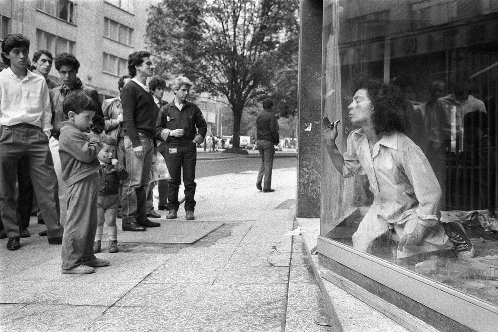

1989 · María Teresa Hincapié
Vitrina fue la acción que posicionó a María Teresa Hincapié dentro del arte contemporáneo colombiano. Durante varios días habitó un local comercial en el centro de Bogotá, transformando la vitrina en un espacio performático.
Al realizar tareas domésticas dentro de una vitrina, Hincapié eliminó la frontera entre el hogar y la calle. La obra representaba cómo las labores históricamente invisibilizadas tienen una dimensión política y social.


Al ocupar el lugar de los maniquíes y productos, cuestionaba la cosificación femenina y la lógica comercial del cuerpo dentro de la ciudad.
Mientras la ciudad se movía rápidamente afuera, Hincapié mantenía un ritmo lento y silencioso. La obra creaba un espacio de contemplación dentro del caos urbano.


Limpiar el vidrio representaba una reflexión sobre la barrera entre la artista y el espectador, entre el yo y el otro.
Su audiencia no eran visitantes de museo, sino peatones, vendedores y trabajadores del centro de Bogotá. La obra proponía que el arte puede existir en cualquier lugar.